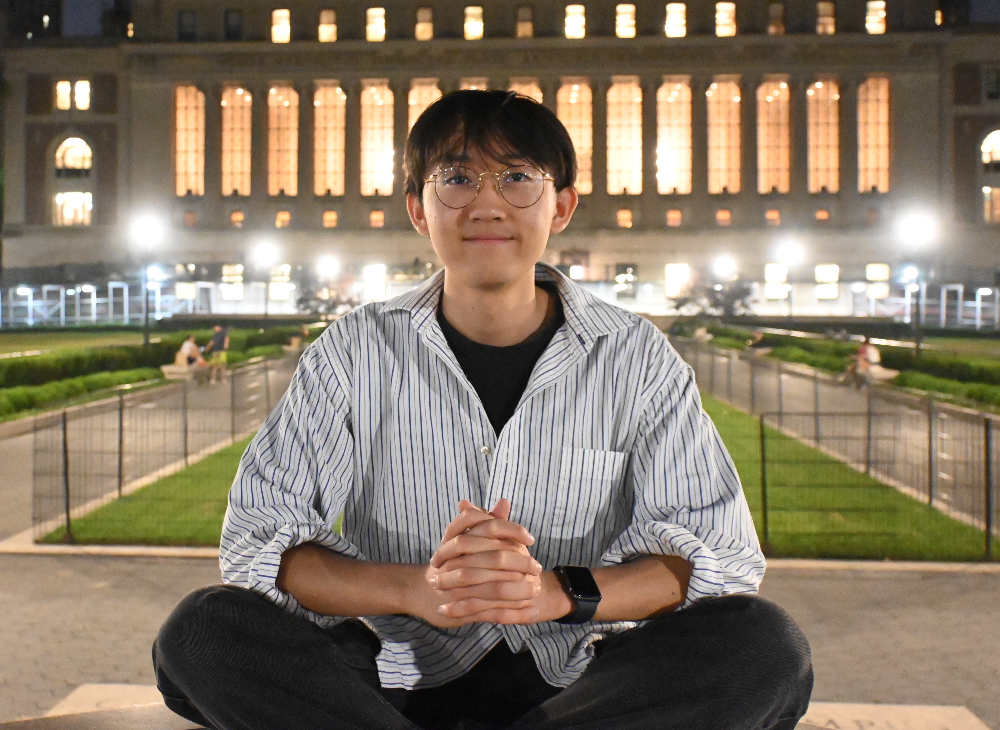
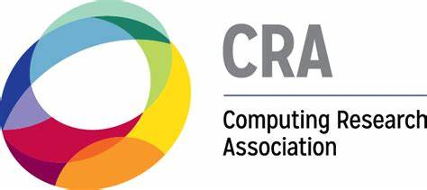
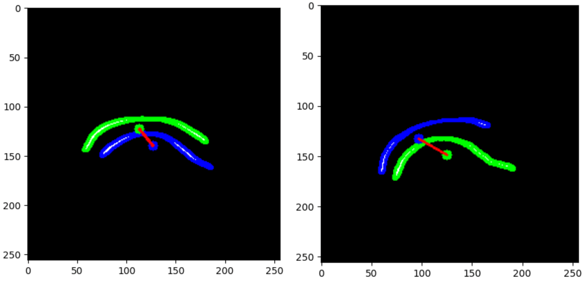
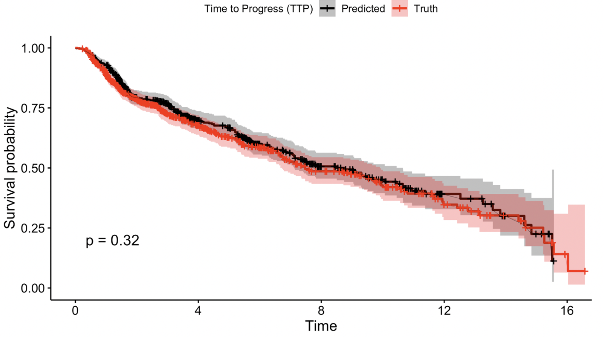
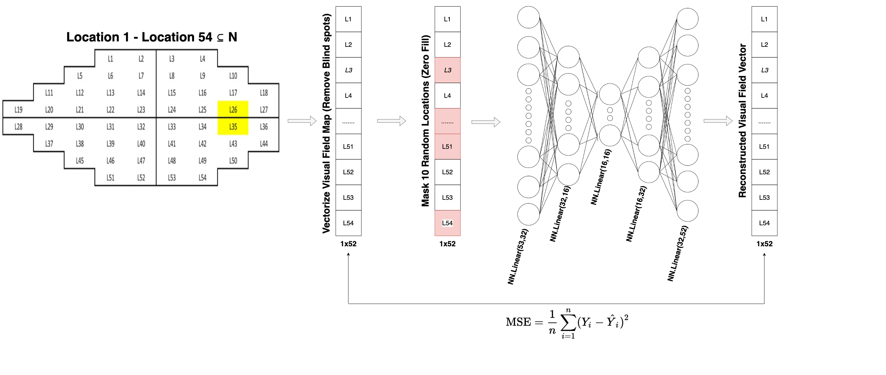
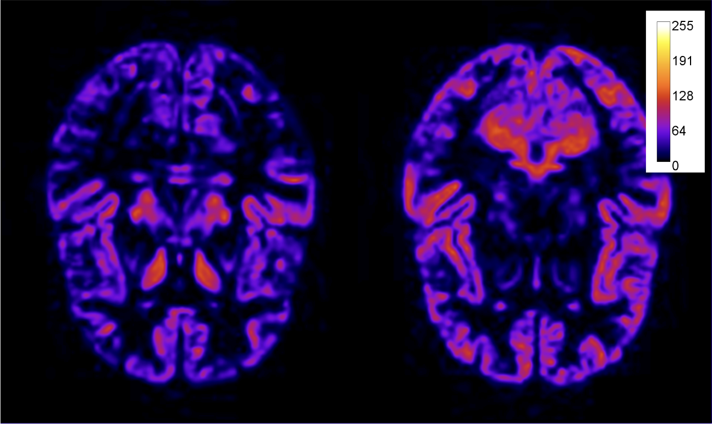
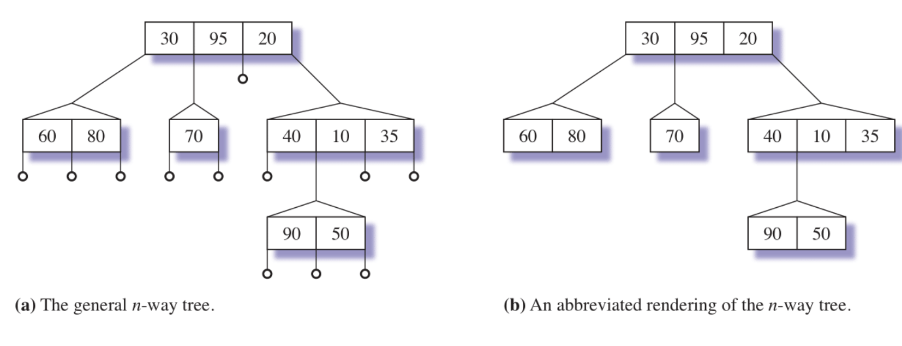

My name is Sean Wu, and I am an undergraduate student at Pepperdine studying computer science and mathematics. I am advised by Dr. Fabien Scalzo. My research interests are computer vision and natural language processing, specifically their applications in medicine.
Email /
CV /
Google Scholar
 |
Named one of 413 Scholars out of estimated pool of over 5,000 college sophomores and juniors, highlighting exceptional aptitude and potential for a research career in natural sciences, engineering, and mathematics. See Goldwater Scholarship Website. |
|  |
Computing Research Association Oustanding Undergraduate Researcher Honorable Mention 2024 See CRA Website. |
|
Summer 2023: I was a research fellow at Amazon SURE @ Columbia University, where conducted research under Simon Billinge. Check out the program details here: Amazon Science Website |
 |
Awarded the Northrop Grumman Endowed Scholarship for outstanding computer science student. |
|
Summer 2022: I was a part of the Keck Scholars Fellows program at Pepperdine where I conducted research during both the school year and the summer. |
 |
I was involved in study aimed to see if a deep learning model could predict visual field (VF) progression using pairs of optic disc photographs. We used 3,919 eyes and found that the model accurately predicted VF progression with an AUC of 0.862 and an accuracy of 81.0%. XRAI heat maps confirmed that the model was focusing on regions of the optic disc expected to show glaucomatous damage. These findings suggest that deep learning models can be useful in managing glaucoma. (Presented at AGS 2023, Accepted to WGS, Paper publish in British Journal of Ophthalmology) |
 |
I lead a study that proposes a framework that uses auxiliary tasks to improve the accuracy of predicting glaucoma progression using a convolutional neural network. The framework utilizes patient age, mean deviation, and optical coherence tomography data to train the model. The study compares baseline models with no auxiliary outputs to the ones built using auxiliary tasks and observes a 6.5% increase in AUC-ROC in the final auxiliary-domain model. The proposed framework demonstrates the usefulness of auxiliary tasks when training ophthalmology models and leveraging important patient data that may not be readily available in routine clinical care. (Paper accepted to MICCAI-OMIA-X 2023) |
 |
I was involved in a method to predict central 10° global and local visual field (VF) measurements using macular optical coherence tomography (OCT) volume scans with deep learning (DL). Our study included 1121 OCT volume scans and 10-2 VFs from 289 eyes (257 patients). We used macular scans to estimate 10-2 VF mean deviation (MD), threshold sensitivity (TS), and total deviation (TD) at 68 locations, and a 3D Convolutional Neural Network based on 3D DenseNet121 architecture was used for prediction. We compared DL predictions to those from broken-stick models (BM) and carried out 10-fold stratified cross-validation to optimize generalizability. The performance of DL and broken-stick models was compared based on correlations between ground truth and predicted VF measures and mean absolute error (MAE: ground truth-minus-predicted values). We found that macular OCT volume scans can be used to predict global central VF parameters with clinically relevant accuracy. (Journal: Translational Vision Science & Technology) |
 |
In this research, I developed a deep learning approach for the segmentation of eyelid and iris contours to aid facial reconstructive surgeons. To standardize the dataset, I utilized a pre-trained eye detection algorithm to crop the patient's eyes and normalize magnification. A deep U-Net network was used for semantic segmentation, consisting of encoding and decoding layers. Data augmentation techniques were used to improve model generalization, and a DICE binary cross-entropy loss function was used to calculate the loss. Finally, two independent models were trained for eyelid and iris segmentation, respectively. The iris segmentation model aids in precise image registration before and after surgery. (Submitted to ASOPRS 2023) |
|  |
In my research project, I focused on tarsal plate contour segmentation in patient images. I utilized a deep neural network approach to learn the correlation between the raw input images and the tarsal plate contours. Specifically, I implemented a deep encoder-decoder U-Net with a pre-trained ResNet50 encoder to extract image features and generate a binary segmentation mask. The network was trained using a DICE binary cross entropy loss function, a learning rate of 1e-4, and a batch size of 2. (Submitted to ASOPRS 2023) |
 |
(Using Artificial Intelligence for Evaluating Structural Eyelid Change Following Mϋller’s Muscle-Conjunctival Resection) I developed a post-processing computer vision method to compare the results of plastic surgery patients before and after their procedures using iris registration techniques. I trained a deep neural network to analyze iris images and extract relevant features. Then, I employed iris registration techniques to align the pre-surgery and post-surgery iris images for accurate comparison. By comparing the extracted features, I was able to measure and quantify the changes in the patients' eyelid shape. This approach provides an objective and reliable method to assess the effectiveness of plastic surgery procedures based on the iris. (Submitted to ASOPRS 2023) |
 |
I was involved in a study that aimed to develop a deep learning (DL) model for predicting visual field (VF) progression in glaucoma patients using baseline optical coherence tomography (OCT) and serial optic disc photographs (ODPs). The study analyzed the data of 3,081 eyes from 1,646 patients with glaucoma or glaucoma suspect, with an average follow-up time of 7.8 (4.7) and 10.3 (5.1) years for stable and progressing eyes, respectively. The results showed that VF progression was detected in 29% of eyes and the mean time to progression in the progressing group was 6.8 (4.2) years. The DL model with baseline OCT and serial ODPs had a high accuracy in predicting VF progression years ahead of time. This model may have clinical implications for earlier detection of glaucoma progression. (Accepted to ARVO 2023) |
|  |
I conducted research on a deep survival analysis algorithm to predict future glaucoma progression and time to detect progression (TTP) from early visual field (VF) information using a deep learning (DL) model. The TTP was the date of the two consecutive visits. I designed a DL model to predict glaucoma progression from the threshold sensitivities at the 54 points of the first five VF visits. I paired a survival analysis with the DL model for predicting the TTP. The results showed that the mean of TTP was 3.4 years, the AUC for predicting future glaucoma progression was 0.81, and the R squared and mean absolute error between the actual and predicted TTP were 0.92 and 0.73 years, respectively. (Accepted to AAO 2023) |
 |
I participated in a research project that aimed to design a deep learning model for predicting the progression of glaucoma using a multimodal approach. I collaborated with other researchers to utilize a convolutional neural network pre-trained on ImageNet and incorporated baseline structural measures including disc photographs, retinal nerve fiber layer, and macular OCT measures as predictors. By combining all three imaging modalities, our model achieved a significantly higher performance for predicting progression with an AUC of 0.884 [0.834-0.934]. (Accepted to AAO 2023) |
 |
The research project I worked on aimed to predict final visual field measurements using a deep learning model. We analyzed data from 7,150 glaucoma eyes with 5 or more VF visits and ≥3 years of follow-up, and developed a generative DL model that predicted mean deviation, pattern standard deviation, and threshold sensitivities at 54 VF locations using data from the first five VF exams. Our goal was to improve the prediction of final VF measurements and ultimately aid in the diagnosis and management of glaucoma. (Accepted to AAO 2023) |
|  |
I led this research to denoise visual field data by employing self-supervised masked autoencoders, which outperformed previous approaches using variational autoencoders. We benchmarked our model using pointwise linear regression and other relevant visual field packages. (Currently Writing Manuscript) |
|  |
In my research, I investigated the challenge of identifying salient regions in medical imaging using deep neural networks and transformer networks. By applying the theory of dictionary learning and analyzing gender classification in brain MRI, I trained models using ResNet 18 and visual transformers. Achieving an accuracy of 84% and 73% respectively, I observed that subtle model trimming influenced performance, with both models reaching 71% accuracy. These findings suggest that transformers may exhibit stronger feature selection capabilities compared to ResNet models, offering potential advantages in medical image analysis. |
 |
I was part of a research project focused on hydrofoil surfing, a unique form of surfing where riders use hydrofoils attached to their surfboards to navigate unbroken waves while hovering above the water's surface. Our research highlighted the increasing popularity of foiling, particularly the downwind technique that allows surfers to ride open ocean wind swells with the help of hydrofoil technology. Recognizing the challenge faced by novice users in identifying suitable waves for foiling, we introduced Foil-Net, a user-friendly wave classification tool that employs an autoencoder and convolutional neural network to categorize and assess waves for hydrofoil surfing based on their quality and suitability. (Accepted ISVC 2023) |
|  |
The paper proposes a set of operations for manipulating general n-way trees, which are trees with each node containing data elements and up to n+1 children. B-trees are a special case of n-way trees that have additional restrictions. The proposed operations include makeSingle(), spliceAt(), splitDownAt(), and splitUpAt(), and they use the Composite State Design Pattern to define the child of an n-way tree as another n-way tree. The paper also presents an algorithm for constructing an n-way tree using another n-way tree as a parameter. (SCCUR 2023) |